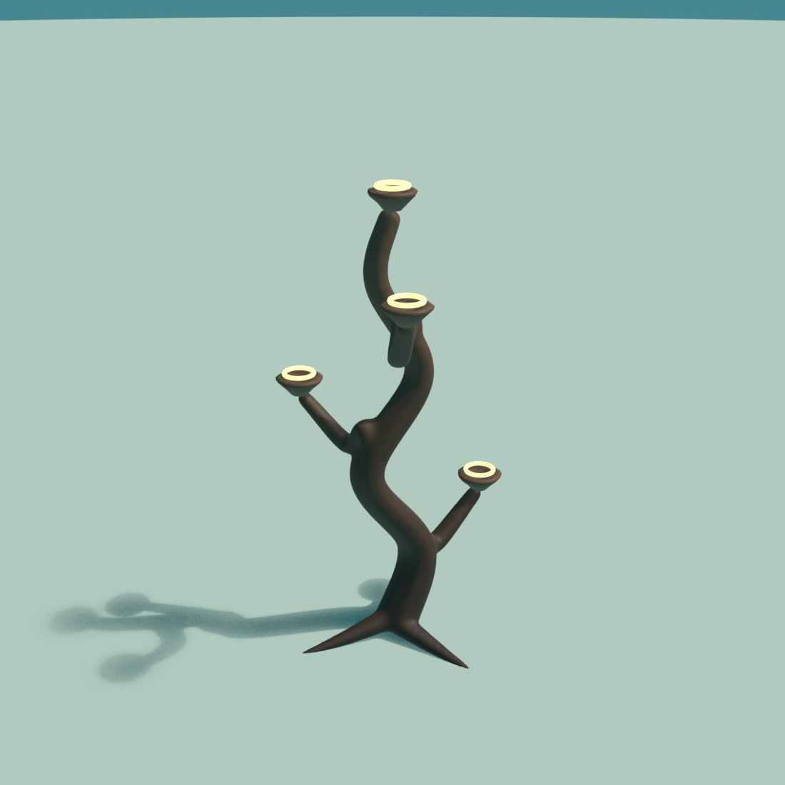
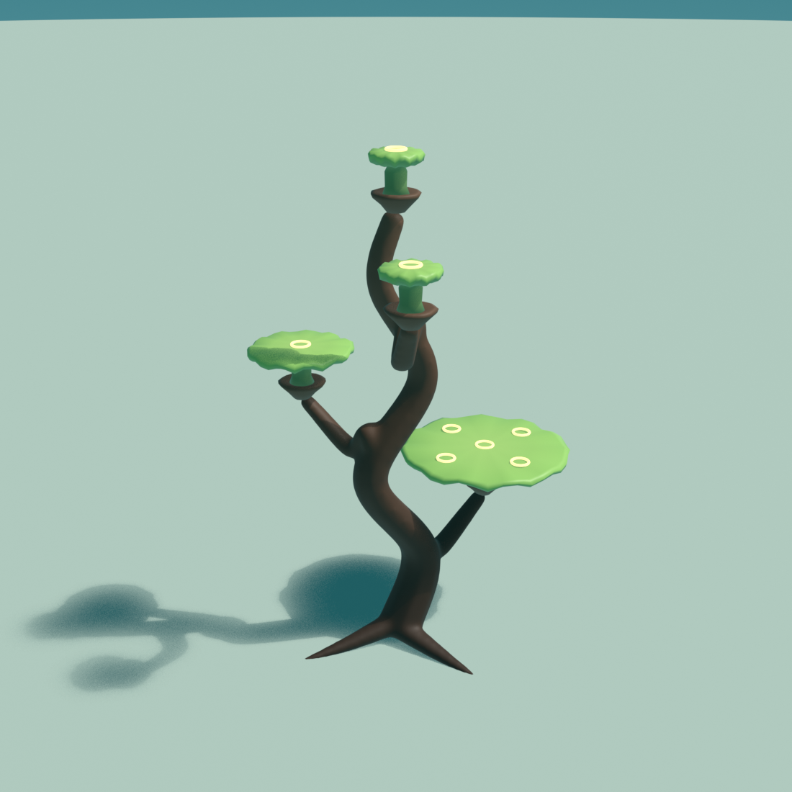
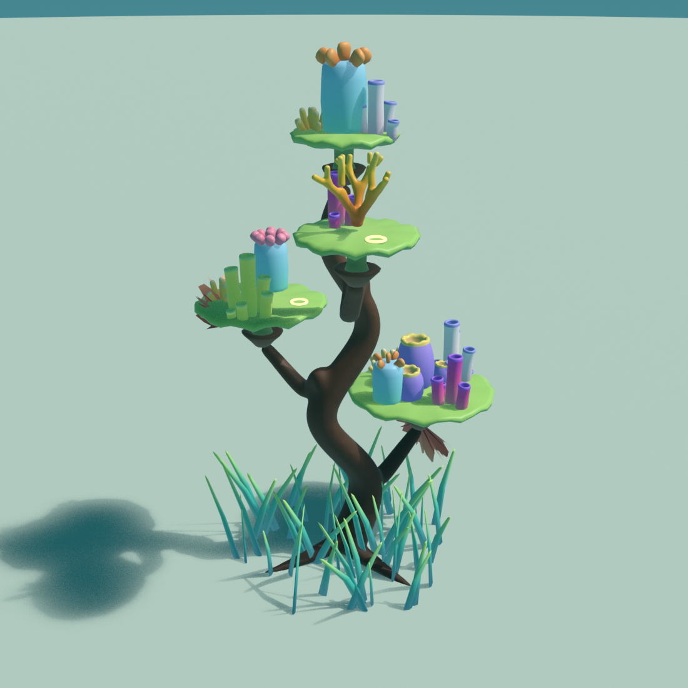
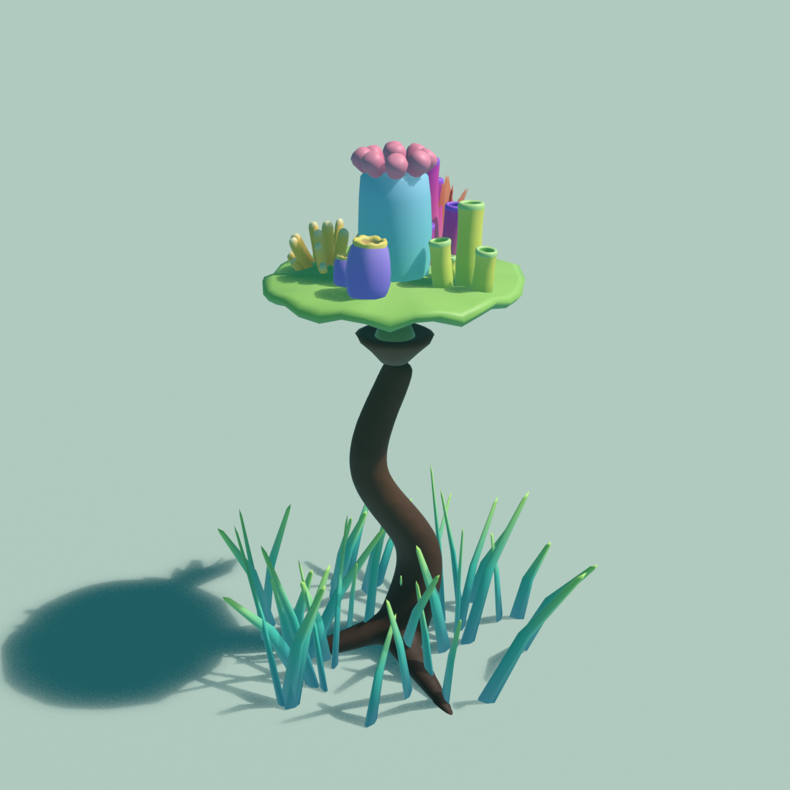
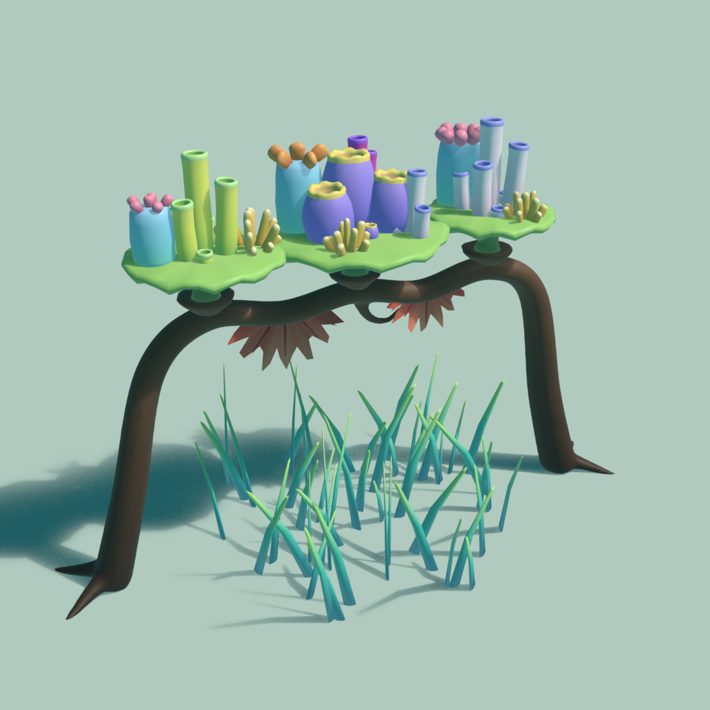
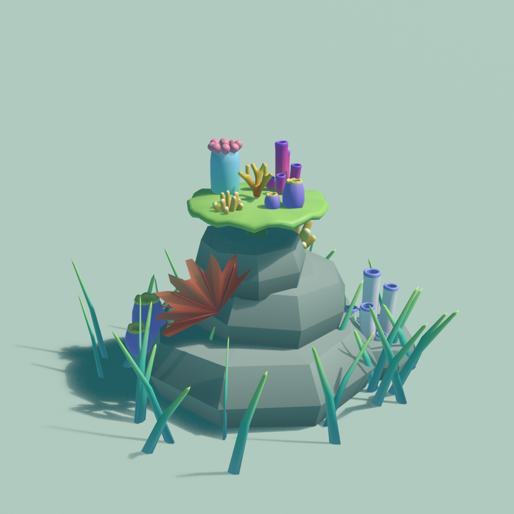
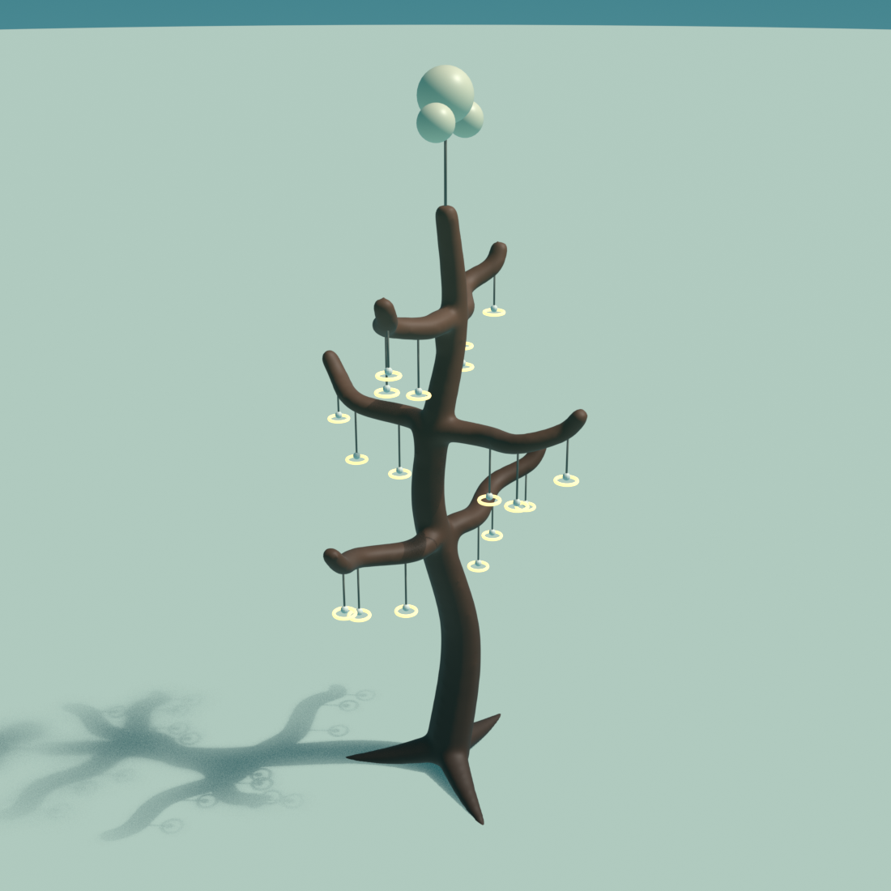
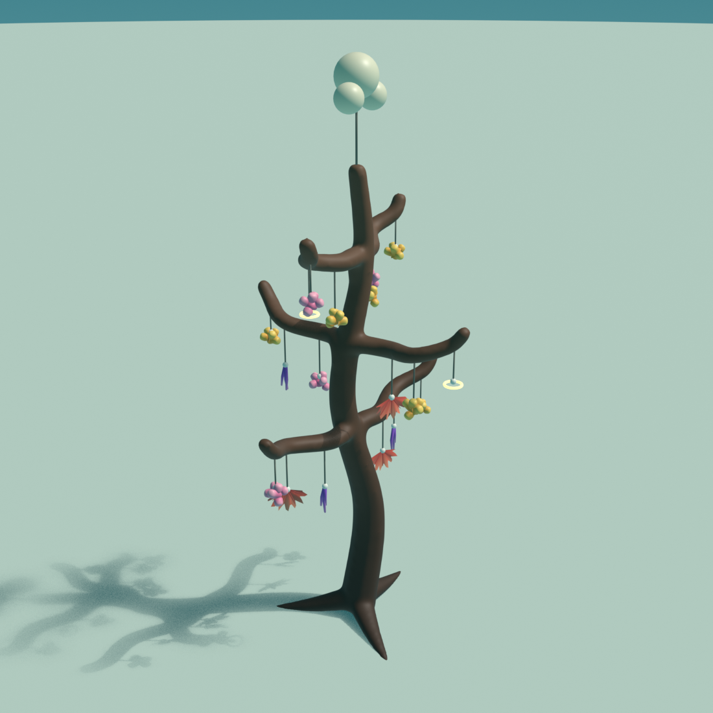
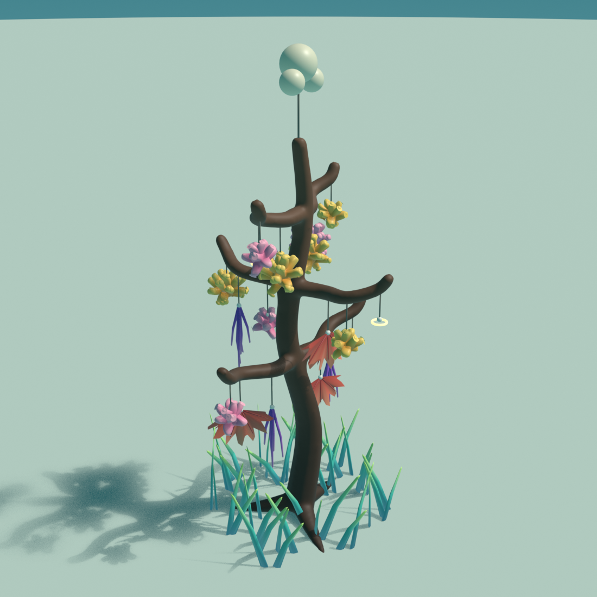

不再是钢管 + 混凝土底座。主干是 S 形扭转的木质曲线，根系铺开压在沙上，枝杈先顺着主干长、再向外分开，所有分叉都融成一体，像雕刻出来的整块木头。枝杈末端是浅木托座，桌面珊瑚插在里面。
深胡桃色（底部 #3E2A1E → 顶部 #72503A），只有很淡的木纹明暗。架子只负责轮廓和结构，把颜色和视觉焦点都留给珊瑚；长满后几乎只露出主干的曲线。
以"阶梯塔"为例。玩家每一步都在给下一步创造位置：架子给桌面珊瑚位置，桌面珊瑚给其他珊瑚位置。

主干和枝杈末端的木托座是桌面珊瑚插槽（发光圈）。一开始能种的只有桌面珊瑚苗。

桌面珊瑚 3 个阶段：小盘 → 中盘 → 大盘，台面插槽 1 → 3 → 5。最下层的大盘先长好，所以先开放。

管状、桶状、珊瑚虫柱、指状、分枝珊瑚种在台面插槽上；扇珊瑚挂在边缘和底面；海草自动围住底座。
每个桌面珊瑚不只提供台面，还提供边缘和底面位置，所以一块台面能同时容纳喜光和喜阴的物种，自然形成参考图里那种上下堆叠。
同一套插槽规则，用不同骨架给出不同的空间形态。可以按解锁顺序或花园区域来分配。

一根 S 形木枝、三条根、一个桌面插槽。教学用：第一次走完"种桌面 → 种上面"的循环。
扭转的主干 + 三条错开 120° 的枝杈，像一棵盆景树。上层给下层遮光，形成喜阴区。VR 里要抬头、绕圈看，是主力造景件。

两条腿顺势弯成一根起伏的横梁，是一整条流动的曲线。梁上 3 个桌面插槽，梁下是悬挂区，鱼群从下面穿过，适合做花园边界或通道。

叠起来的天然礁石，石头顶面和侧面都是插槽。可以作为后期奖励：架子长满后"自然化"成礁石，象征修复完成。
最接近现在原型的那种架子：一层层横枝，碎片挂在绳子上，顶上有浮球。造型换成同一套深棕沉木。它和 A–D 的分工不同：A–D 是造景，E 是育苗。在这里把碎片养大，再掰下来移植到桌面和礁石上。

三层横枝，每根枝上挂 3 根绳，每根绳末端一个挂钩（发光圈）。玩家把碎片挂上去，就像现在原型里把碎片放到苗圃上。

挂着的碎片不碰地面，也不被邻居挡，四周都能长。现在的清洁玩法照样适用：藻类长在横枝和绳子上。

上层光多，分枝珊瑚长成一团团"珊瑚球"；下层被上层遮住，适合扇珊瑚和下垂的软珊瑚。成熟后可以掰枝移植。
| 珊瑚类型 | 适合挂吗 | 原因 / 挂着长成什么样 |
|---|---|---|
| 分枝珊瑚（现有 BranchCoral） | 最适合 | 断下的小枝就能继续长，生长快，是苗圃的主力。挂着时没有地面，会向四面分枝，长成一团"珊瑚球"。上层最好。 |
| 扇珊瑚（新增） | 适合 | 平面扇形、靠水流带来食物。挂着正好迎着水流摆动；不太需要强光，适合下层。 |
| 下垂软珊瑚 / 海鞭（新增） | 适合 | 身体柔软，可以自然下垂、随水摆动，悬挂时的动画最好看。适合下层和横枝末端。 |
| 指状珊瑚 | 勉强 | 小块可以挂，但它长成的是向上的一簇，更适合移植到桌面后再长。 |
| 桶状海绵、管状海绵、珊瑚虫柱 | 不适合 | 需要固着在底座上、重心低、往上长，挂着会翻倒、口朝下。它们属于桌面和礁石。 |
悬挂苗圃是"生产者"：珊瑚球长到成熟后，玩家可以掰下一小枝（掰枝的手感和清洁一样是亲手操作），拿去种到桌面或礁石的插槽上。苗圃里的品种越多，造景能用的珊瑚就越多。
它是现有原型的直接延续：碎片抓取、清洁藻类、浮球和锚绳的视觉都能沿用，只替换架子造型。也给花园加了一个"珊瑚从哪来"的起点，和修复主题对应。
| 关系 | 规则 | 玩家看到的反馈 |
|---|---|---|
| 承载 | 附生珊瑚只能种在台面插槽上；台面阶段决定插槽数量（1/3/5）。 | 台面长大时，新插槽一个个亮起来并轻轻回弹。 |
| 健康传递 | 台面被藻类覆盖时，上面的珊瑚停止生长；清洁后恢复。 | 台面变暗、珊瑚虫收起；刷干净后珊瑚虫依次张开。 |
| 遮光 | 上层台面投影范围内的下层插槽变成"喜阴插槽"，只接受扇珊瑚、海绵。 | 喜阴插槽显示为青色，种错时幽灵预览会提示。 |
| 空间挤压 | 相邻台面边缘重叠时，较小的一方长得更慢、往空的方向偏。 | 台面边缘自然错开，不会互相穿插。 |
| 多样性 | 同一架子上物种越多，吸引的鱼越多，并解锁图鉴条目。 | 新鱼种游过来绕架子转，对应图鉴页点亮。 |
藻类改成长在斜臂、台面底部和台面边缘，沿用现在的刷子、接触判定和进度弧。清洁不再是单独的练习点，而是维持台面健康的日常照料。
沿用现有的珊瑚碎片抓取。碎片靠近合适的插槽时出现半透明幽灵预览并吸附，松手即种下；不合适的插槽不吸附，也没有惩罚。
| 模块 | 做什么 |
|---|---|
RackSocket | 插槽：类型（桌面 / 台面 / 边缘 / 底面）、位置、法线、可容纳尺寸、当前占用者。架子和桌面珊瑚都挂这个组件。 |
TableCoral | 继承现有 CoralGrowth：每个阶段启用对应的台面插槽，并把自己的健康度广播给台面上的珊瑚。 |
CoralSpecies | 新增"需要哪种插槽"和"喜光 / 喜阴"；种植时只匹配允许的插槽。 |
| 架子预制体 | A–D 四种骨架用 Blender 生成：样条曲线定义主干和枝杈 → 每段蒙皮成管 → 体素重建网格把分叉融成一体 → 平滑。插槽位置作为空物体导出，Unity 里自动挂上 RackSocket。出包前需要减面（概念稿约 1.7 万顶点）。 |
| 新物种 | 桌面珊瑚（3 阶段）和扇珊瑚是新增的；海草作为自动填充件，不需要玩家种。 |